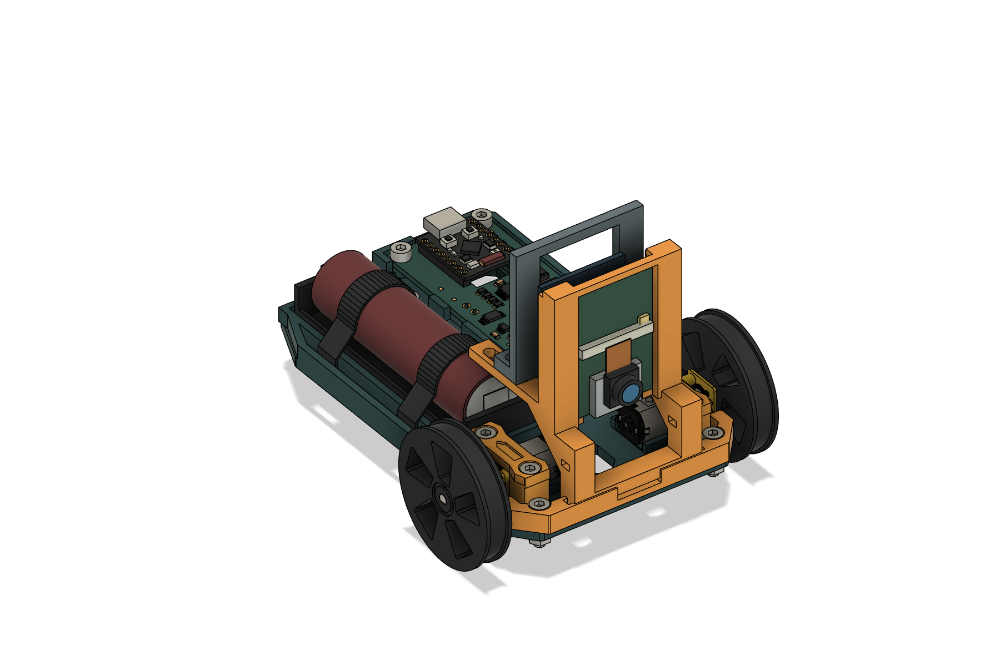
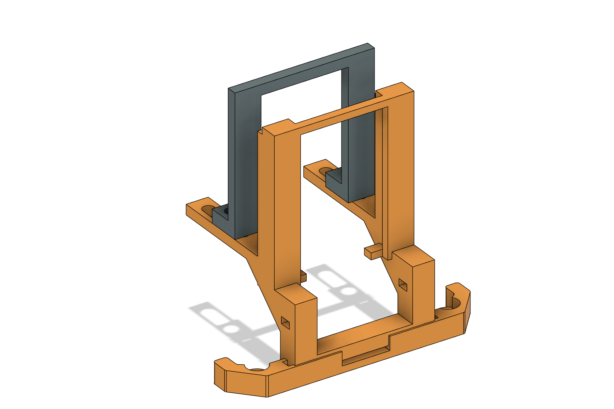
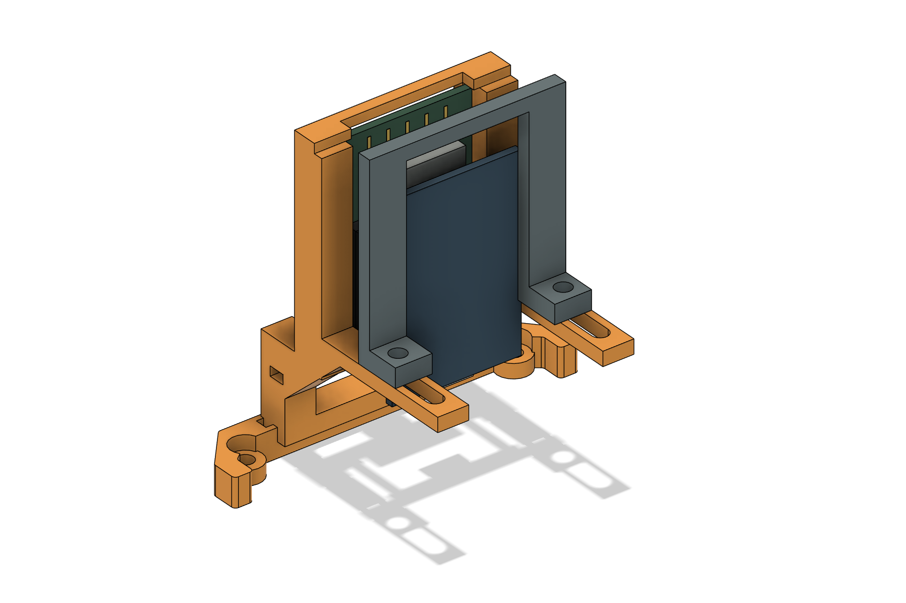

ESP32-CAM, with USB adapter attached
A replacement front bumper holds the camera upright and facing forward. A separate sliding rear support retains the USB programming board. The two original bumper screws still attach it to Scout.
Adjustable prototype — physical fit remains untested. The camera PCB outline is documented, but the exact HiLetgo adapter dimensions and assembled depth are not. The rear support adjusts for a 10–25 mm stack depth; width and camera height are fixed. Test the actual kit and cable before operating the rover.

Download and print
Separate editable parts: bumper F3D and rear support F3D. Neutral CAD: bumper STEP and rear support STEP. STL coordinates are millimetres. Electronics reference bodies are not print parts.
How the adjustment works
The camera’s front PCB edges rest against the fixed frame. The antenna end points up; the microSD and USB openings point down. Slide the rear support forward until its two rails just meet bare edges on the back of the USB adapter. Tightening the two vertical bolts locks the support to its tracks.
The slider is a locating stop, not a press. Fully seat the camera’s headers into the USB adapter before mounting. Do not use the slider to force boards together, bow a PCB, or press on solder joints. If the rear support does not touch clear PCB edge lands, modify its contact pads before use.
Dimensions and fit limits
| Feature | Design basis |
|---|---|
| Camera PCB | 27 × 40 mm in the linked listing’s sixth image. Model allows a 40.5 mm reference board, using the common Ai-Thinker family dimension. |
| Fixed frame | 28 mm inside width; 41 mm from lower seats to upper stops. A nominal 27 mm board has 0.5 mm clearance on each side. |
| Front locating edges | 0.7 mm nominal overlap per side; actual component and header clearances must be checked. No holes are drilled through either PCB. |
| Rear support adjustment | 10–25 mm from the camera’s front PCB face to the rear PCB contact plane. Initial CAD position is 15 mm. |
| USB adapter reference | Illustrative 27 × 40 × 1.6 mm PCB, 5 mm below the camera board. Exact HiLetgo outline, offset, stack depth and connector are unverified. The listing mixes USB-C and Micro-USB descriptions. |
| Rear edge contacts | Inner edges 25.6 mm apart. A 27 mm wide adapter gives 0.7 mm nominal overlap; the actual adapter must sit securely on both contact rails. |
| Lens clearance | Camera PCB is 12 mm behind the bumper’s foremost edge. The 8 mm lens projection shown is illustrative; measure yours. |
| Original mounting | 56 mm screw spacing, original 3.4 mm clearances and 6.2 mm counterbores preserved. |
| Printed bounds | Bumper: 72 × 48.5 × 66 mm. Rear support: 41 × 10 × 41 mm. Installed mount reaches z = 73 mm in Scout’s CAD coordinates. |
Sources checked October 16, 2026: HiLetgo B07RXPHYNM product listing and images; Ai-Thinker ESP32-CAM specification, supplier-hosted copy. The current listing names an OV3660 camera. The mount has no close-fitting lens aperture.

Hardware
| Quantity | Item |
|---|---|
| 2 | Reuse Scout’s original M3 × 10 socket-cap bumper screws and M3 nuts. |
| 2 | M3 × 12 socket-cap screws for the slider, inserted from below. |
| 2 | M3 nuts above the slider feet, nominal 2.4 mm thick. |
| 4 | M3 flat washers, approximately 7 mm outside diameter × 0.5 mm thick; one under each screw head and one under each nut. |
| 1–2 | Small nylon cable ties, up to 2.5 mm wide, for USB cable restraint. |
| Optional | Thin insulating shims to remove side or height play, placed only on bare PCB edge lands. |
The modeled slider stack is 3 mm deck + 4 mm foot + two 0.5 mm washers + 2.4 mm nut. M3 × 12 leaves about 1.6 mm of thread beyond the nut. Bottom-up mounting keeps screw ends above the tracks. Verify your actual hardware; do not install long screws pointing down at the motors.
Print and assemble
- Print one of each part. PETG, 0.2 mm layers, four walls and about 35% infill are starting settings. Place the bumper’s original flat underside on the bed. Supports are needed beneath the elevated tracks and may be needed for the top bridge. Place the rear support’s flat front contact face on the bed. Inspect the slicer preview and clean all holes and contact faces.
- Fit the slider hardware first. Insert the two M3 × 12 screws through washers and the long slots from below. Test the rear support, top washers and nuts, then remove the rear support again. Leave the two bolts in the slots. The support must be removed while inserting the electronics.
- Test on Scout without power. Remove the battery, exchange the bumper, and reuse the original two M3 × 10 fasteners. Confirm both wheels turn freely and the slider hardware clears the motors.
- Seat the complete module. Plug the camera fully into its USB adapter. With the rear support removed, antenna up and lens forward, insert the stack from the rear of the front frame. Rest the camera PCB’s lower corners on the two small seats; tuck its upper corners below the top stops. The adapter may hang lower through the central opening.
- Set the rear stop. Lower the rear support onto the two bolts behind the adapter, add the top washers and nuts, then slide it forward until both rails gently contact bare edges of the adapter PCB. Inspect the lens side and the back: no component, pin, solder joint, ribbon or connector should carry clamping load. Tighten both nuts only enough to lock the slider position.
- Check retention. Verify the camera cannot lift over the top stops, slip sideways out of the front lips, or pull back. Use thin insulating edge shims if needed. The nominal 0.7 mm front overlap is small; printer error and unusual PCB layouts can require a revision. Never force the kit into the frame.
- Connect and restrain USB. Fit the actual USB cable from below. Route it rearward through the center, leaving a gentle bend. Use the 3.5 × 2 mm openings in the front uprights to restrain the cable without pulling on its connector. Keep it away from both wheels and the antenna. Check access to microSD and reset/programming buttons.
- Test the camera before driving. Confirm a stable image, appropriate image rotation, no frame in view, and no intermittent USB or header contact when the assembly is gently moved. Start with a slow test on a clear surface. Mechanical fit, heat, vibration and RF performance have not been tested.

Power and firmware
The ESP32-CAM is a separate controller that needs its own camera firmware. Use the adapter’s USB input with an appropriate regulated 5 V USB supply. This design does not change Scout’s firmware or power wiring. The camera is not an I²C replacement for the OLED, and it must not be powered from a C3 GPIO pin. Before powering it from Scout’s battery system, verify the regulator’s current capacity and noise under motor load.
Verification supplied
The package includes Fusion solid, fastener and assembly checks, illustrative module and USB clearance checks, independent STL checks, and design dimensions. The original bumper material is retained. Both print meshes are closed, connected solids. Travel checks cover the nominal position and both recommended endpoints; they do not establish real module fit or strength.